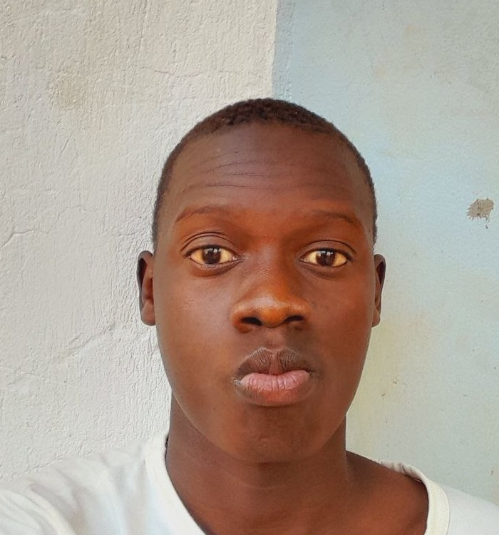

<!DOCTYPE html>
<html></html>
<!DOCTYPE html>
<html lang="en-us">

<head>
    <meta charset="utf-8">
    <meta name="viewport" content="width=device-width,initial-scale=1.0">
    <title>Yakan Frank | WDD130</title>
    <meta name="description" content="Yakan Frank BYU-Idaho WDD 130 course work homepage">
    <link rel="stylesheet" href="styles/styles.css">
</head>

<body>
    <header>
        <nav>
            <a href="#">Home</a>
            <a href="wwr/">Rafting site</a>
        </nav>
    </header>
    <main>
        <h1>Yakan Frank | WDD130</h1>
        
        <p>Hello my name is Yakan Frank and I come from Uganda.</p>
        <p>Welcome to My Learning Journey.<br>
        Hi there! I'm YAKAN FRANK,<br>
        A passionate software development student building real-world skills through hands-on projects.<br>
        This website—crafted from the ground up—serves as both my learning laboratory and professional showcase.<br>
        Every line of code reflects my commitment to mastering modern web development while applying core principles from our coursework.</p>
    </main>
    <aside>
        <h2>UGANDA</h2>
        
        <p>Just like the magnificent Crested crane, with its elegant stature and golden crown,
            Uganda is a land of unparalleled beauty and regal spirit. This iconic bird, our
            national emblem, embodies the grace, resilience, and vibrant tapestry of our nation.
            WELCOME TO UGANDA, THE PEARL OF AFRICA.
        </p>
    </aside>
    <footer>
        <p>&copy; 😎😎😎😎Yakan Frank 😎😎 UGANDA </p>
    </footer>
</body>
</html>